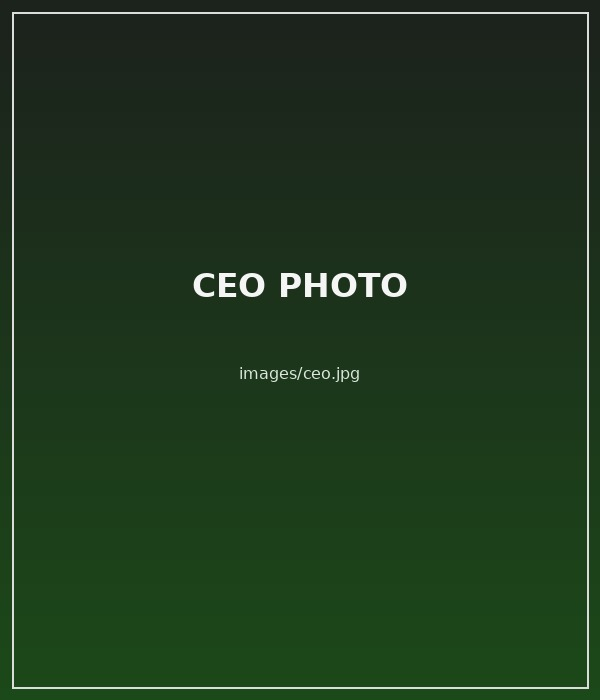
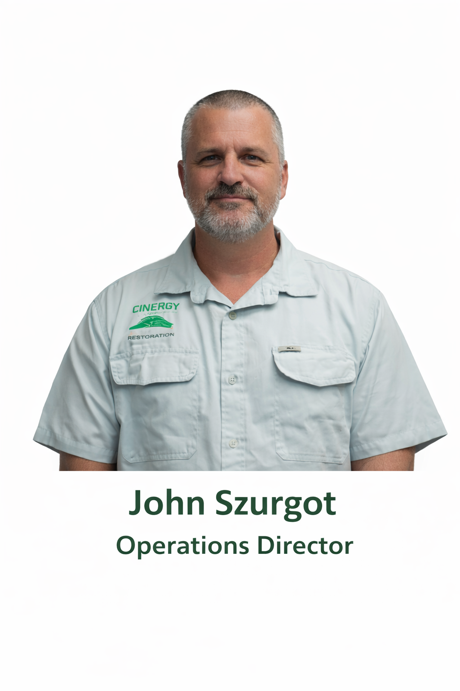
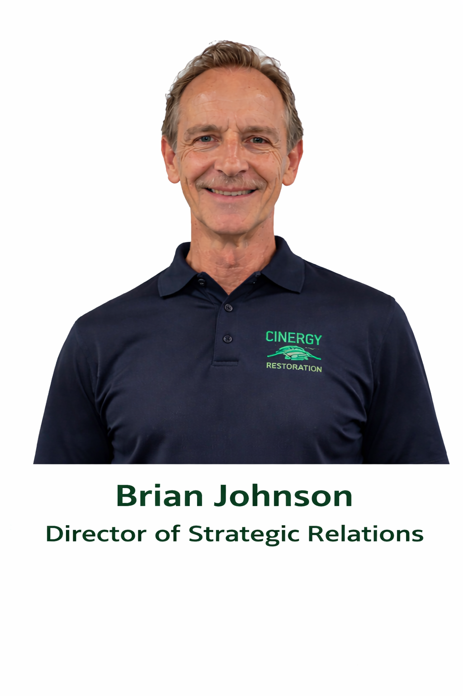
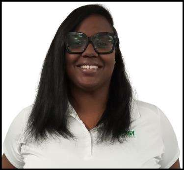
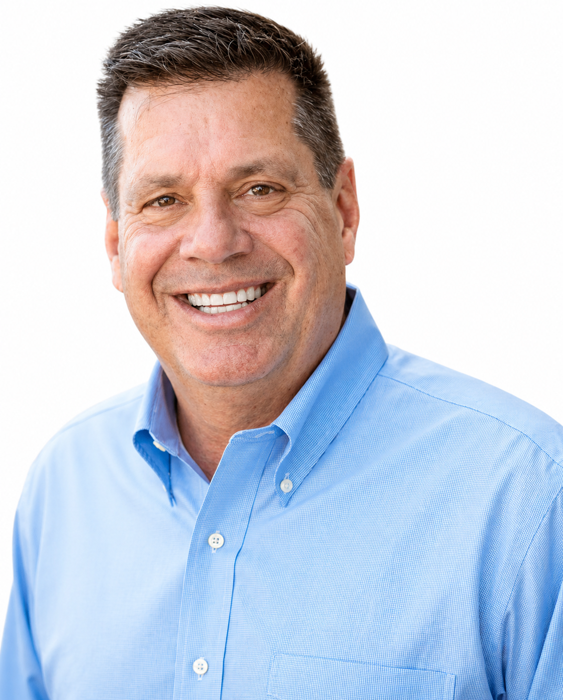

CEO
Leads company vision, standards, and long-term strategy while helping keep service responsive and accountable.
For more than 30 years, Cinergy Restoration has served Florida as a fully licensed general contractor specializing in restoration, remediation, and complete property rebuilds. Our team is built to guide clients through fast-moving situations with clearer communication and one coordinated process from the emergency stage through final reconstruction.
Cinergy Restoration is built around responsive service, clear communication, and a staff that cares about helping homeowners, businesses, and property managers move forward with confidence. From the first call to the final walkthrough, our team works hard to keep the process organized, professional, and easier to manage.
We understand that restoration work often begins during stressful situations. That is why our dedicated staff focuses on fast follow-through, honest updates, and dependable support across mitigation, remediation, and reconstruction. The goal is simple: be there when clients need help most and provide a cleaner path from damage to recovery.

Leads company vision, standards, and long-term strategy while helping keep service responsive and accountable.

Coordinates crews, scheduling, and project execution to keep work moving in a clean, organized way.

Supports new client relationships and helps create a smooth handoff from first inquiry to signed project.

Represents the Cinergy brand, strengthens community presence, and supports client-facing outreach initiatives.

Helps guide program development, process consistency, and internal coordination across key service areas.

Supports estimate intake, relationship building, and a better client experience from first contact to project launch.

Works with clients and referral partners to keep communication clear and opportunities moving forward.